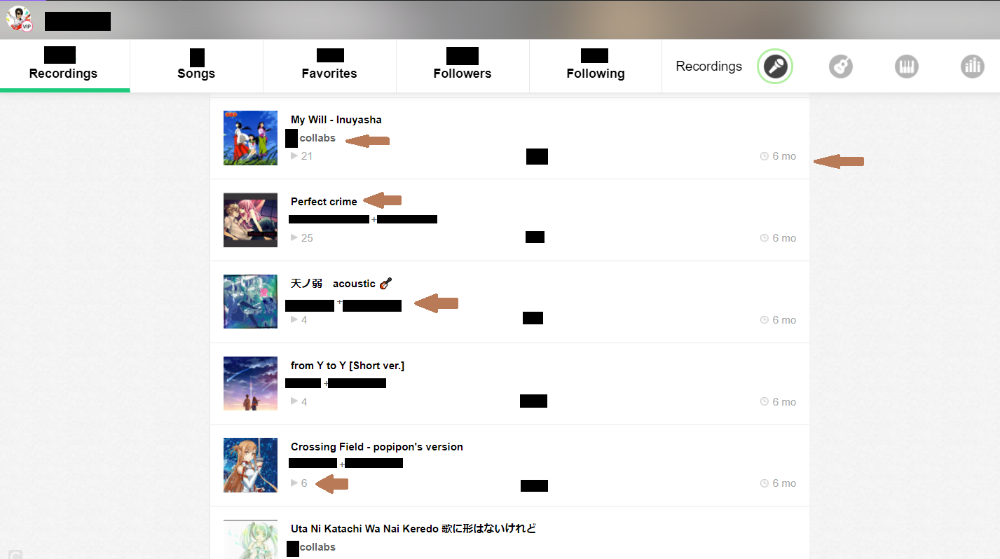
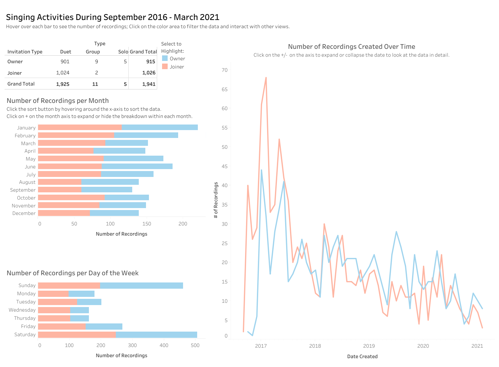

Data Visualization: Smule App Data - Backstory
IN THE MIDDLE OF UPDATING OLD VIZ WITH NEW!
The Tableau visualization shown on this project use the data extracted from my Smule page. The data is from September 2016 - March 2021.
Refer to the Data Mining: Smule App Data for the detail on data extraction. This project is essentially a '2.0 version' of that mother project.Below is what the Smule webpage looks like and a preview of the visualization created by the obtained data. The data of interest is marked with the brown arrow. These include but not limited to song title, number of collaborations, number of listens, date the recording was created, inviters, etc. The raw data is omitted for privacy.
 